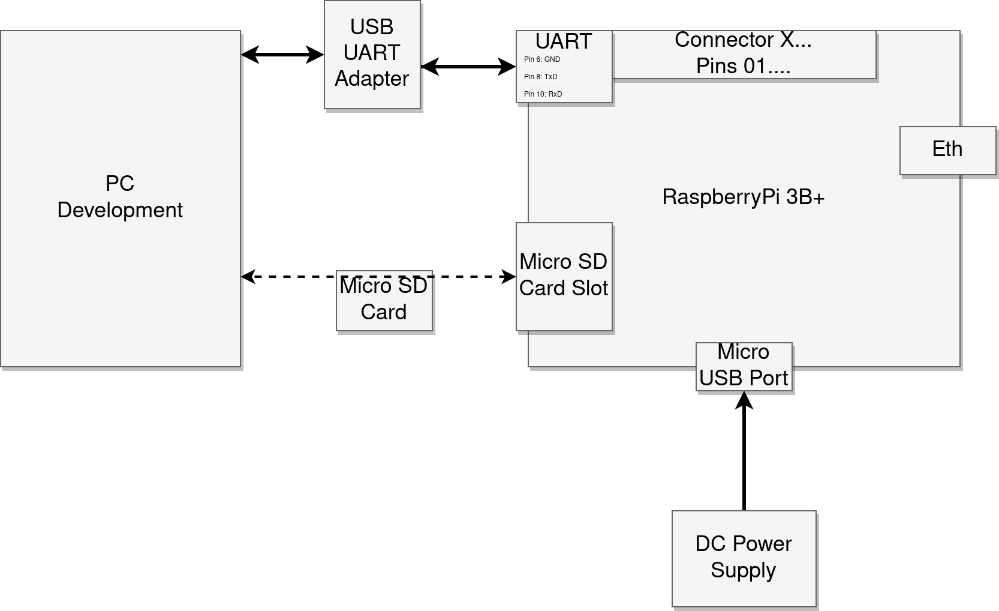
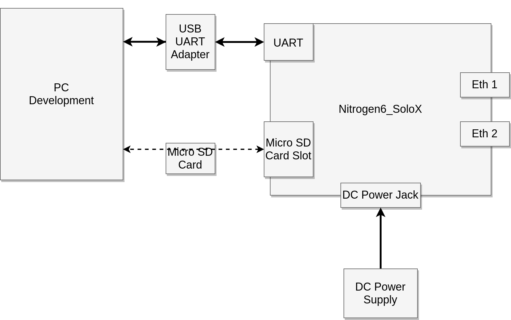
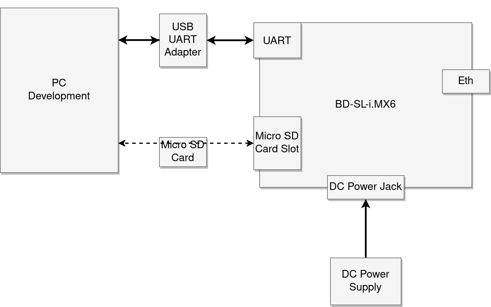

Getting Started¶
########################################################
# DEPRECATION WARNING #
# This section of the TRENTOS documentation is out of #
# sync and may contain no longer relevant information. #
########################################################
Until this section is updated please refer to TRENTOS README
Scope¶
This Getting Started will provide guidance for the first steps towards using the TRENTOS SDK. It covers:
SDK package content
Setup of the Docker environment
How to build a TRENTOS based system
How to run/test a TRENTOS based system
Content¶
From a high-level point of view, the SDK provides all the tools required to build and run a custom TRENTOS based system:
Source code for the seL4 microkernel & the CAmkES framework
Source code for all TRENTOS core system libraries and components, offering functionality for
Exemplary driver setup based on the QEMU-Host bridge “ChanMux” interface, suitable for the Xilinx Zynq-7000 platform emulated by QEMU
Network driver
Storage driver
RPi3B+ drivers for
Network driver
SD Host controller
SPI-based storage
Timer
Nitrogen6_SoloX drivers for
Network driver
SD Host controller
Timer
BD-SL-i.MX6 drivers for
Network driver
SD Host controller
Timer
Networking (PicoTCP network stack)
File system (FAT, SPIFFS and LittleFS)
Logging
Configuration
Crypto
Crypto server
Keystore
Certificate parser
TLS
Various helper libraries
Runtime environments based on:
Emulated hardware
QEMU (emulating the Zynq-7000 hardware platform)
Proxy application (both in source code and binary form) providing the required network and storage backends
Physical hardware
RPi3B+
Nitrogen6_SoloX
BD-SL-i.MX6
Firmware and bootloader files for the:
RPi3B+
Nitrogen6_SoloX
BD-SL-i.MX6
Scripts for building and running, that can be used as a foundation for custom projects
Docker-based working environment containing a Linux system that provides all tools required for
Development (e.g. compiler toolchain for ARM) and
Testing (e.g. QEMU)
Documentation
TRENTOS Getting Started
TRENTOS Handbook
TRENTOS API Doxygen documentation
Demos
Demo Hello World (print “hello world!” message)
Demo IoT App (IoT use case that uses most of the components and APIs)
Demo Network Filter (network filter use case utilizing two network ports)
Demo TLS API (showcasing the TLS API by retrieving an HTTPS web page)
Install the SDK Package¶
Within the scope of this document, we assume that a Linux system is used since all the listed commands have been tested on Ubuntu 18.04 and 20.04 LTS, as well as on Linux Mint 20. The TRENTOS SDK is provided in the form of a tar archive compressed with bzip2 and thus needs to be extracted before use. Since the SDK is self-contained and works with relative paths it can be extracted in an arbitrary directory.
For the purpose of this document, we will assume that the content of the archive is extracted in the directory TRENTOS_SDK_1.3 as follows:
mkdir TRENTOS_SDK_1.3tar -xjv -f TRENTOS_SDK_1.3.tar.bz2 -C TRENTOS_SDK_1.3
Most of the commands used in later parts of the document assume a terminal is open in the TRENTOS_SDK_1.3 directory and where this is not the case it will be explicitly stated. Also, we will refer to the TRENTOS_SDK_1.3 directory as the SDK root directory.
Finally, it is important to note that by default, all the build artifacts are stored in the SDK root directory which can be changed by the user by modifying arguments in the build script invocation. This is discussed in the Buildsystem chapter of the TRENTOS Handbook. In the following section, we will go over the contents of the unpacked archive.
SDK Root Directory Structure¶
GettingStarted.pdf → Link to sdk/doc/pdf/TRENTOS_GettingStarted_SDK_V1.3.pdf
docker → Containers with toolchain to build and test TRENTOS systems
trentos_1.3.sha256sums
trentos_build_20210503.bz2
trentos_test_20211025.bz2
sdk
build-system.sh → Master build script for building TRENTOS systems
CMakeLists.txt → Master CMake script for building TRENTOS systems
README.license → License information
bin → TRENTOS tools binaries for Linux
cpt → Configuration Provisioning Tool
proxy_app → Proxy Application
rdgen → RamDisk Generator
components → TRENTOS components sources
CertServer → Component to offer “read access” to the set of trusted certificates (the “trusted chain”)
ChanMux → Channel Multiplexer component for communication with the Proxy Application
CryptoServer → CryptoServer+Keystore component
EntropySource → Dummy TRNG driver
NetworkStack_PicoTcp → Network stack component based on picoTCP
NIC_ChanMux → Network driver for a ChanMux NIC channel
NIC_Dummy → Dummy network driver
NIC_iMX6 → Network driver for the iMX6 platform
NIC_RPi → Network driver for RPi3B+
RamDisk → RAM-based storage driver
RPi_SPI_Flash → Storage driver for SPI-based NOR flash memory for RPi3B+
SdHostController → Driver that implements the storage interface and allows accessing the SD card peripheral
Storage_ChanMux → Storage driver for a ChanMux storage channel
StorageServer → Providing access to storage for various clients
TimeServer → Providing access to timers for various clients
TlsServer → TLS client + networking component
UART → UART driver
demos
demo_hello_world → Hello World demo
demo_iot_app → IoT Demo (QEMU)
demo_iot_app_imx6 → IoT Demo (Nitrogen6_SoloX, BD-SL-i.MX6)
demo_iot_app_rpi3 → IoT Demo (RPi3B+)
demo_network_filter → Network Filter Demo (QEMU, Nitrogen6_SoloX)
demo_tls_api → Demo retrieving an HTTPS web page
doc
html →TRENTOS API Doxygen documentation
pdf → TRENTOS documentation
TRENTOS_GettingStarted_SDK_V1.3.pdf
TRENTOS_Handbook_SDK_V1.3.pdf
TRENTOS_ReleaseNotes_SDK_V1.3.pdf
TRENTOS_MigrationNotes_SDK_V1.2_to_V1.3.pdf
3rd_party → Supplemental documents
libs → TRENTOS libraries and core system sources
3rdParty → 3rd party libraries used by TRENTOS libraries internally
chanmux → ChanMux
chanmux_nic_driver → Network driver based on ChanMux
lib_compiler → Compiler abstraction utilities
lib_debug → Debugging facility macros and functions
lib_host → Host side utilities
lib_io → I/O operations
lib_logs → Logging utilities
lib_macros → Commonly used macros
lib_mem → Memory management utilities
lib_osal → Operating System abstraction library
lib_server → Server components utilities
lib_utils → Common useful utilities
os_cert → Certification parser library for x509 certificates
os_configuration → Configuration server library
os_crypto → Crypto library
os_filesystem → File system library (FAT, SPIFFS, LittleFS)
os_keystore → Keystore library (file based, RAM based)
os_logger → Log server core library
os_socket → Socket library
os_tls → TLS client library
os_core_api → TRENTOS APIs for all subsystems
resources
nitrogen6sx_sd_card → SD card files with Nitrogen6_Solo bootloader
openocd_cfgs → Configuration files for debugging with OpenOCD
rpi3_sd_card → SD card files with RPi3B+ bootloader
sabre_sd_card → SD card files with BD-SL-i.MX6 bootloader
scripts → Utility scripts
sdk-sel4-camkes → seL4 and CAmkES
tools → TRENTOS tools source code
cpt → Configuration Provisioning Tool
proxy → Proxy Application
rdgen → RamDisk Generator
rpi3_flasher → TRENTOS helper system for flashing an image on the RPi3B+ SPI-based NOR flash memory
Setup¶
As a prerequisite, the docker engine needs to be installed on your development machine. An installation guide for the engine can be found at https://docs.docker.com/engine/install. This tutorial assumes you have a working docker service installed on your machine and that your current user is a member of the docker and sudo group. The SDK provides two archives with docker containers:
trentos_build_20210503.bz2: the build container
trentos_test_20211025.bz2: the test container
The rationale for splitting the containers is, that the test container is much more lightweight than the build container.
Install the Docker Images¶
To install these docker images on your machine, open a terminal in the folder where the archives are located and run the commands below. Due to the size of the docker images, this will take several minutes.
# enter the SDK root directory
cd <sdk_root_directory>
# load trentos_build docker image
docker load --input docker/trentos_build_20210503.bz2
# load trentos_test docker image
docker load --input docker/trentos_test_20211025.bz2
Verify that the docker images are installed properly by running.
docker images
This should result in the following output, especially the values in the column IMAGE ID must match. The column CREATED may differ, since it gives the time delta since creation.
REPOSITORY TAG IMAGE ID CREATED SIZE
hensoldtcyber/trentos_test latest a8ce644de82c 3 weeks ago 1.79GB
hensoldtcyber/trentos_build latest d3dffe4123e3 2 months ago 8.69GB
Use the Docker Images¶
The docker containers based on the docker images can be used in two different ways:
interactively, i.e. using a shell inside the container. This is the default mode if no further arguments are given.
non-interactively, i.e. using the container to execute a command or a script. This is the recommended way for build pipelines.
Note that containers are not persistent, i.e. all changes inside the container (except changes on the mounted folder from the host system) are lost once it is closed.
Use Container in Interactive Mode¶
Note that the current working directory on the host is mounted into the docker container under /host, so subfolders are accessible within the container but not the parent folder.
To open the trentos_build docker container in the interactive mode, run this command:
# start bash in a new trentos_build container
sdk/scripts/open_trentos_build_env.sh
To leave the container enter exit.
Similarly, for the trentos_test docker container the command is:
# start bash in a new trentos_test container
sdk/scripts/open_trentos_test_env.sh
To leave the container enter exit.
Each of these commands starts a new container instance which allows further user interaction from within the container.
Use Container in Non-Interactive Mode¶
Note that the current working directory on the host is mounted into the docker container under /host, so the command or script can access subfolders but not the parent folder.
To run a command or a script in the trentos_build docker container, run this command:
# execute a specific script in a new trentos_build container
sdk/scripts/open_trentos_build_env.sh <path_to_build_script>
Similarly, for the trentos_test docker container the command is:
# execute a specific script in a new trentos_test container
sdk/scripts/open_trentos_test_env.sh <path_to_test_script>
Each of these commands starts a new container instance, executes the command or script, and stops the container afterwards.
Use the Network of the Test Container¶
The trentos_test docker container automatically sets up the network interface and configures access permissions. The IP address 172.17.0.x is assigned automatically to each trentos_test docker container, starting from x = 2 for the first started container.
Additionally it creates an internal subnet with the address 10.0.0.0/24 and the IP address of the trentos_test docker container is 10.0.0.1. This network is hidden behind a NAT and the following port ranges are forwarded:
Port range 10000:10999 for TCP and UDP is forwarded to 10.0.0.10
Port range 11000:11999 for TCP and UDP is forwarded to 10.0.0.11
Verify that network and internet access from within the container is possible by pinging a server in interactive mode:
# start bash in a new trentos_test container
sdk/scripts/open_trentos_test_env.sh
# execute ping
ping -c 3 hensoldt-cyber.com
To leave the container enter exit.
Container Commands¶
For easier access to the containers it is also possible to add the folder sdk/scripts to your PATH variable and execute the sdk/scripts/install_bashrc.sh script. This adds open_trentos_build_env and open_trentos_test_env as commands to bash (i.e. it will copy the contents of bash_functions.def to your .bashrc file). The container commands can be used directly instead of calling the scripts with the path.
TRENTOS in QEMU¶
Build a TRENTOS System¶
The following section demonstrates the general build process of a TRENTOS system for QEMU. The Hello World demo shipped with the SDK is used as an example use case. Building a TRENTOS system is done by executing the build-system.sh script within the trentos_build docker container. The build-system.sh script takes the following arguments:
Project directory: the directory that contains the source files of the project to be built (here sdk/demos/demo_hello_world is the path to the Hello World source folder from the SDK root directory)
Build platform: the underlying hardware platform, for which the TRENTOS system shall be built (here zynq7000, which targets the Xilinx Zynq-7000 SoC that can be emulated by QEMU)
Output directory: the directory in which the built artifacts are stored (here build-zynq7000-Debug-demo_hello_world)
Build type: the actual build type reflecting the purpose of the TRENTOS system to be built (here -DCMAKE_BUILD_TYPE=Debug that causes the CMake build system to create a Debug build)
The following command will invoke the build script from inside the trentos_build docker container. Upon start, docker will mount the current working directory into the docker container under /host, execute the build, and then remove the container again. Then the script is executed in the container and the container is removed once the script finishes. For the Hello World demo, this call looks like the following:
trentos/sdk/scripts/open_trentos_build_env.sh trentos/build.sh demo_hello_world
If the build is successful, the console produces the following output:
##------------------------------------------------------------------------------
## build successful, output in build-zynq7000-Debug-demo_hello_world
##==============================================================================
As a result, the folder build-zynq7000-Debug-demo_hello_world is created in the SDK root directory, containing all the build artifacts.
Congratulations, you have successfully built your first secure TRENTOS system!
More details on the build system can be found in the TRENTOS Handbook in the Buildsystem chapter.
Run a TRENTOS System¶
Similar to the build script above, the following command will invoke the run script from inside the trentos_test docker container. Upon start, docker will mount the current working directory into the docker container under /host, execute the run script and then remove the container again. For the Hello World demo, this call looks like the following:
# change to the build output folder
cd build-zynq7000-Debug-demo_hello_world
# execute the Hello World demo in the trentos_test container
../sdk/scripts/open_trentos_test_env.sh ./simulate
Note that in this case the simulate run script must be invoked from within the build output folder build-zynq7000-Debug-demo_hello_world. This requires the change to this directory and the invocation of the test container there. Remember to change back to the SDK root directory for the following steps.
After successful execution, the following output can be expected:
Booting all finished, dropped to user space
main@main.c:2125 Starting CapDL Loader...
main@main.c:2127 CapDL Loader done, suspending...
hello world!
Congratulations, you have successfully run your first secure TRENTOS system!
To exit QEMU and the container, press <Ctrl-A> and <X>.
TRENTOS on the Raspberry Pi 3 B+¶
This chapter describes how to run the Hello World demo standalone on the Raspberry Pi 3 B+ (RPi3B+) without using the trentos_test docker container and QEMU.
Build a TRENTOS System¶
The following section demonstrates the general build process of a TRENTOS system for the RPi3B+. The Hello World demo shipped with the SDK is used as an example use case.
The build process is similar to the one for the zynq7000 target as shown above. It only differs in the underlying hardware platform type, which in this case is the rpi3 platform.
The following command will invoke the build script from inside the trentos_build docker container. The container will mount the current working directory under /host, execute the script and then remove itself.
sdk/scripts/open_trentos_build_env.sh \
sdk/build-system.sh \
sdk/demos/demo_hello_world \
rpi3 \
build-rpi3-Debug-demo_hello_world \
-DCMAKE_BUILD_TYPE=Debug
As a result, the folder build-rpi3-Debug-demo_hello_world is created in the SDK root directory, containing all the build artifacts.
Hardware Setup¶
In order to run the demo, the following is required:
RPi3B+ incl. power supply
UART-to-USB adapter
MicroSD card (formatted with MBR/DOS partitioning)
Before building or executing the demo it is necessary to first properly connect all the hardware components:
connect the UART-to-USB adapter to the RPi3B+ board
connect the UART-to-USB adapter to your PC
connect the RPi3B+ board to the power supply
The following diagram shows the hardware setup: 
SD Card Setup¶
Info: The RPi3B+ requires SD cards to use an MBR partition table. If this is not the case (e.g. partition table uses GPT format) the board will not boot at all. Thus, if your RPi3B+ does not boot or does not give you any output on the console interface even if the SD contains all required files, make sure to verify that the card is MBR (“MS-DOS”) formatted. A step-by-step guide on how to create an MBR partitioned SD card can be found in the Using an SD Card with a TRENTOS System section in the TRENTOS Handbook.
Before the TRENTOS image can be executed on the RPi3B+ platform it is necessary to first prepare the SD card with the necessary files provided as part of the SDK package. To do so, it is enough to do the following:
Remove the SD card from the RPi3B+ and connect it to your PC. In the following steps, we assume that the SD card is mounted at <sd_card_mount_point>.
Copy required files to the SD card (More information on each individual file and its role for the execution of a TRENTOS system can be found in the Raspberry Pi 3 Model B+ section in the TRENTOS Handbook).
# copy bootfiles to SD card
cp sdk/resources/rpi3_sd_card/* <sd_card_mount_point>/
After copying the required bootfiles it is necessary to copy the TRENTOS image to the SD card as well.
# copy TRENTOS system image to SD card
cp build-rpi3-Debug-demo_hello_world/images/os_image.elf <sd_card_mount_point>/
# ensure files are written to the SD card
sync
umount <sd_card_mount_point>
Run a TRENTOS System¶
After preparing the SD card, we want to run the TRENTOS system on the RPi3B+. In order to observe the UART output from the RPi3B+, we have to start a serial monitor that shows the traffic received from the UART-to-USB adapter. One way of doing this is to use the picocom utility with the following command. If the picocom package is not already available on the system, it can be installed with a package manager (e.g. apt).
sudo picocom -b 115200 /dev/<ttyUSBX>
Hereby, <ttyUSBX> acts as a placeholder for the specific device representing the USB-to-UART adapter, e.g. ttyUSB0. Note that using sudo may not be required, this depends on your Linux group membership giving your account access to /dev/<ttyUSBX>.
Once the terminal is open, insert the SD card into the RPi3B+ and restart the board with a power cycle. The terminal should show the RPi3B+ booting and eventually running the Hello World demo saying “hello world!”.
U-Boot 2020.07-rc3-00002-g4b6f96a0a6 (May 26 2020 - 18:38:13 +0200)...
Bootstrapping kernel
Booting all finished, dropped to user space
main@main.c:2125 Starting CapDL Loader...
main@main.c:2127 CapDL Loader done, suspending...
hello world!
To exit picocom, press <Ctrl-A> and <Ctrl-X>.
TRENTOS on the Nitrogen6_SoloX¶
This chapter describes how to run the Hello World demo standalone on the Nitrogen6_SoloX without using the trentos_test docker container and QEMU.
Build a TRENTOS System¶
The following section demonstrates the general build process of a TRENTOS system for the Nitrogen6_SoloX. The Hello World demo shipped with the SDK is used as an example use case.
The build process is similar to the one for the RPi3B+ target as shown above. It only differs in the underlying hardware platform type, which in this case is the nitrogen6sx platform.
The following command will invoke the build script from inside the trentos_build docker container. The container will mount the current working directory under /host, execute the script and then remove itself.
sdk/scripts/open_trentos_build_env.sh \
sdk/build-system.sh \
sdk/demos/demo_hello_world \
nitrogen6sx \
build-nitrogen6sx-Debug-demo_hello_world \
-DCMAKE_BUILD_TYPE=Debug
As a result, the folder build-nitrogen6sx-Debug-demo_hello_world is created in the SDK root directory, containing all the build artifacts.
Hardware Setup¶
In order to run the demo, the following is required:
Nitrogen6_SoloX incl. power supply
UART-to-USB adapter
MicroSD card (formatted)
Before building or executing the demo it is necessary to first properly connect all the hardware components:
connect the UART-to-USB adapter to the Nitrogen6_SoloX
connect the UART-to-USB adapter to your PC
connect the Nitrogen6_SoloX board to the power supply
The following diagram shows the hardware setup:

SD Card Setup¶
Before the TRENTOS image can be executed on the Nitrogen6_SoloX platform it is necessary to first prepare the SD card with the necessary files provided as part of the SDK package. To do so, it is enough to do the following.
Remove the SD card from the Nitrogen6_SoloX and connect it to your PC. In the following steps, we assume that the SD card is mounted at <sd_card_ount_point>.
Copy the required bootfiles to the SD card. (More information on each individual file and its role for the execution of a TRENTOS system can be found in the Nitrogen6_SoloX section in the TRENTOS Handbook.)
# copy bootfiles to SD card
cp sdk/resources/nitrogen6sx_sd_card/* <sd_card_mount_point>/
After copying the required bootfiles it is necessary to copy the TRENTOS image to the SD card as well.
# copy TRENTOS system image to SD card
cp build-nitrogen6sx-Debug-demo_hello_world/images/os_image.elf <sd_card_mount_point>/
# ensure files are written to the SD card
sync
umount <sd_card_mount_point>
Upgrade U-Boot in Flash¶
The Nitrogen6_SoloX needs to be prepared with a specific U-Boot image to successfully boot a TRENTOS system. With the preparation of the previous step, the SD card now contains the required U-Boot image which needs to be installed into the board’s internal flash. This process requires to interact with the board through its UART port, so a serial monitor and the UART-to-USB adapter have to be used. One way of doing this is to use the picocom utility with the following command. If the picocom package is not already available on the system, it can be installed with a package manager (e.g. apt).
sudo picocom -b 115200 /dev/<ttyUSBX>
Hereby, <ttyUSBX> acts as a placeholder for the specific device representing the USB-to-UART adapter, e.g. ttyUSB0. Note that using sudo may not be required, this depends on your Linux group membership giving your account access to /dev/<ttyUSBX>.
Once the terminal is open, insert the SD card into the Nitrogen6_SoloX board and restart the board with a power cycle.
Observer the UART output in a terminal window running picocom as described above. Interrupt the boot process by pressing <Enter> when the console outputs “Hit any key to stop autoboot”.
U-Boot 2018.07-36536-gb89e53e64c (Aug 31 2020 - 17:16:55 +0200)
CPU: Freescale i.MX6SX rev1.3 at 792 MHz
Reset cause: WDOG
Board: nitrogen6sx
I2C: ready
DRAM: 1 GiB
MMC: FSL_SDHC: 0, FSL_SDHC: 1
Loading Environment from SPI Flash...
SF: Detected sst25vf016b with page size 256 Bytes, erase size 4 KiB, total 2 MiB
OK
Display: lvds:tm070jdhg30 (1280x800)
In: serial
Out: serial
Err: serial
Net: AR8035 at 4
AR8035 at 5
FEC0 [PRIME], FEC1, usb_ether
Hit any key to stop autoboot: 1
Run the following command to upgrade U-Boot in the board’s internal flash (note the u at the end):
=> run upgradeu
This will run the upgrade.scr script found on the prepared SD card, search for the u-boot.imx file and flash it.
Once the process has successfully completed, the board’s internal flash should now contain the new version of U-Boot. On success you should see the following output:
switch to partitions #0, OK
mmc0 is current device
Scanning mmc 0:1...
Found U-Boot script /upgrade.scr
4199 bytes read in 25 ms (163.1 KiB/s)
## Executing script at 80008000
Called gpio_direction_output() in mxc_gpio.c for gpio = 48 with value = 1.
SF: Detected sst25vf016b with page size 256 Bytes, erase size 4 KiB, total 2 MiB
probed SPI ROM
check U-Boot
490496 bytes read in 51 ms (9.2 MiB/s)
read 77c00 bytes from SD card
device 0 offset 0x400, size 0x77c00
SF: 490496 bytes @ 0x400 Read: OK
byte at 0x82000407 (0x17) != byte at 0x82400407 (0x87)
Total of 7 byte(s) were the same
Need U-Boot upgrade
Program in 5 seconds
5
4
3
2
1
erasing
SF: 786432 bytes @ 0x0 Erased: OK
programming
device 0 offset 0x800, size 0x77800
SF: 489472 bytes @ 0x800 Written: OK
device 0 offset 0x400, size 0x400
SF: 1024 bytes @ 0x400 Written: OK
verifying
device 0 offset 0x400, size 0x77c00
SF: 490496 bytes @ 0x400 Read: OK
Total of 490496 byte(s) were the same
--- U-Boot upgraded. reset
Run a TRENTOS System¶
After preparing the SD card and upgrading U-Boot in the board’s internal flash, we want to run the TRENTOS system on the Nitrogen6_SoloX.
Restart the board with a power cycle or by pressing the restart button on the board. The terminal should show the board booting and eventually running the Hello World demo saying “hello world!”.
U-Boot 2018.07-36539-ge26f5ffed7 (Nov 24 2020 - 20:36:55 +0100)...
Bootstrapping kernel
Booting all finished, dropped to user space
main@main.c:2125 Starting CapDL Loader...
main@main.c:2127 CapDL Loader done, suspending...
hello world!
To exit picocom, press <Ctrl-A> and <Ctrl-X>.
TRENTOS on the BD-SL-i.MX6¶
This chapter describes how to run the Hello World demo standalone on the BD-SL-i.MX6 (also known as Sabre Lite) without using the trentos_test docker container and QEMU.
Build a TRENTOS System¶
The following section demonstrates the general build process of a TRENTOS system for the BD-SL-i.MX6. The Hello World demo shipped with the SDK is used as an example use case.
The build process is similar to the one for the RPi3B+ target as shown above. It only differs in the underlying hardware platform type, which in this case is the sabre platform.
The following command will invoke the build script from inside the trentos_build docker container. The container will mount the current working directory under /host, execute the script and then remove itself.
sdk/scripts/open_trentos_build_env.sh \
sdk/build-system.sh \
sdk/demos/demo_hello_world \
sabre \
build-sabre-Debug-demo_hello_world \
-DCMAKE_BUILD_TYPE=Debug
As a result, the folder build-sabre-Debug-demo_hello_world is created in the SDK root directory, containing all the build artifacts.
Hardware Setup¶
In order to run the demo, the following is required:
BD-SL-i.MX6 incl. power supply
UART-to-USB adapter
MicroSD card (formatted)
Before building or executing the demo it is necessary to first properly connect all the hardware components:
connect the UART-to-USB adapter to the BD-SL-i.MX6
connect the UART-to-USB adapter to your PC
connect the BD-SL-i.MX6 board to the power supply
The following diagram shows the hardware setup:

SD Card Setup¶
Before the TRENTOS image can be executed on the BD-SL-i.MX6 platform it is necessary to first prepare the SD card with necessary files provided as part of the SDK package. To do so, it is enough to do the following:
Remove the SD card from the BD-SL-i.MX6 and connect it to your PC. In the following steps, we assume that the SD card is mounted at <sd_card_mount_point>.
Copy the required bootfiles to the SD card. (More information on each individual file and its role for the execution of a TRENTOS system can be found in the BD-SL-i.MX6 section in the TRENTOS Handbook.)
# copy bootfiles to SD card
cp sdk/resources/sabre_sd_card/* <sd_card_mount_point>/
After copying the required bootfiles it is necessary to copy the TRENTOS image to the SD card as well:
# copy TRENTOS system image to SD card
cp build-sabre-Debug-demo_hello_world/images/os_image.elf <sd_card_mount_point>/
# ensure files are written to the SD card
sync
umount <sd_card_mount_point>
Upgrade U-Boot in Flash¶
The BD-SL-i.MX6 needs to be prepared with a specific U-Boot image to successfully boot a TRENTOS system. With the preparation of the previous step, the SD card now contains the required U-Boot image which needs to be installed into the board’s internal flash. This process requires to interact with the board through its UART port, so a serial monitor and the UART-to-USB adapter have to be used. One way of doing this is to use the picocom utility with the following command. If the picocom package is not already available on the system, it can be installed with a package manager (e.g. apt).
sudo picocom -b 115200 /dev/<ttyUSBX>
Hereby, <ttyUSBX> acts as a placeholder for the specific device representing the USB-to-UART adapter, e.g. ttyUSB0. Note that using sudo may not be required, this depends on your Linux group membership giving your account access to /dev/<ttyUSBX>.
Once the terminal is open, insert the SD card into the BD-SL-i.MX6 board and restart the board with a power cycle or by pressing the restart button on the board.
Observer the UART output in a terminal window running picocom as described above. Interrupt the boot process by pressing <Enter> when the console outputs “Hit any key to stop autoboot”.
U-Boot 2018.07-36539-ge26f5ffed7 (Nov 24 2020 - 20:32:25 +0100)
CPU: Freescale i.MX6Q rev1.2 at 792 MHz
Reset cause: POR
Board: sabrelite
I2C: ready
DRAM: 1 GiB
MMC: FSL_SDHC: 0, FSL_SDHC: 1
Loading Environment from SPI Flash...
SF: Detected gd25q16c with page size 256 Bytes, erase size 4 KiB, total 2 MiB
OK
Display: hdmi:1280x720M@60 (1280x720)
In: serial
Out: serial
Err: serial
Net: Micrel ksz9021 at 7
FEC [PRIME], usb_ether
Hit any key to stop autoboot: 0
Run the following command to upgrade U-Boot in the board’s internal flash (note the u at the end):
=> run upgradeu
This will run the upgrade.scr script found on the prepared SD card, search for the u-boot.imx file and flash it.
Once the process has successfully completed, the board’s internal flash should now contain the new version of U-Boot. On success you should see the following output:
MMC: no card present
mmc_init: -123, time 2
switch to partitions #0, OK
mmc1 is current device
Scanning mmc 1:1...
Found U-Boot script /upgrade.scr
4174 bytes read in 14 ms (291 KiB/s)
## Executing script at 10008000
SF: Detected gd25q16c with page size 256 Bytes, erase size 4 KiB, total 2 MiB
probed SPI ROM
check U-Boot
568320 bytes read in 39 ms (13.9 MiB/s)
read 8ac00 bytes from SD card
device 0 offset 0x400, size 0x8ac00
SF: 568320 bytes @ 0x400 Read: OK
byte at 0x12000400 (0xd1) != byte at 0x12400400 (0xb8)
Total of 0 byte(s) were the same
Need U-Boot upgrade
Program in 5 seconds
5 4 3 2 1
erasing
SF: 786432 bytes @ 0x0 Erased: OK
programming
device 0 offset 0x800, size 0x8a800
SF: 567296 bytes @ 0x800 Written: OK
device 0 offset 0x400, size 0x400
SF: 1024 bytes @ 0x400 Written: OK
verifying
device 0 offset 0x400, size 0x8ac00
SF: 568320 bytes @ 0x400 Read: OK
Total of 568320 byte(s) were the same
--- U-Boot upgraded. reset
Run a TRENTOS System¶
After preparing the SD card and upgrading U-Boot in the board’s internal flash, we want to run the TRENTOS system on the BD-SL-i.MX6.
Restart the board with a power cycle or by pressing the restart button on the board. The terminal should show the board booting and eventually running the Hello World demo saying “hello world!”.
U-Boot 2018.07-36526-gdfb8018f53 (Aug 06 2020 - 18:57:51 +0200)...
Bootstrapping kernel
Booting all finished, dropped to user space
main@main.c:2125 Starting CapDL Loader...
main@main.c:2127 CapDL Loader done, suspending...
hello world!
To exit picocom, press <Ctrl-A> and <Ctrl-X>.
Further Steps¶
Please have a look at the handbook at sdk/doc/pdf/TRENTOS_Handbook_SDK_V1.3.pdf for more information about the individual components and how to set up the other demo systems.
You could start with:
look into one of the demos, build and run it
dive deeper into seL4 and CAmkES
dive deeper into the TRENTOS components
Once you have acquired the necessary understanding of the TRENTOS system, start developing your own applications and components.
A detailed TRENTOS API Doxygen documentation is available at sdk/doc/html/index.html.